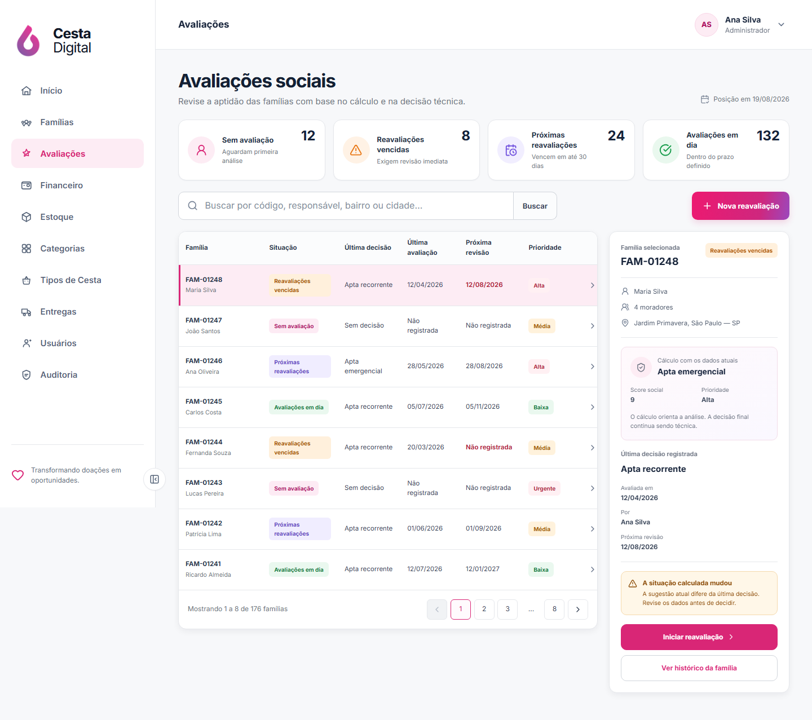
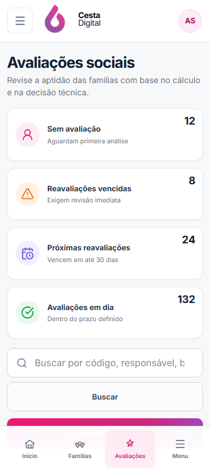
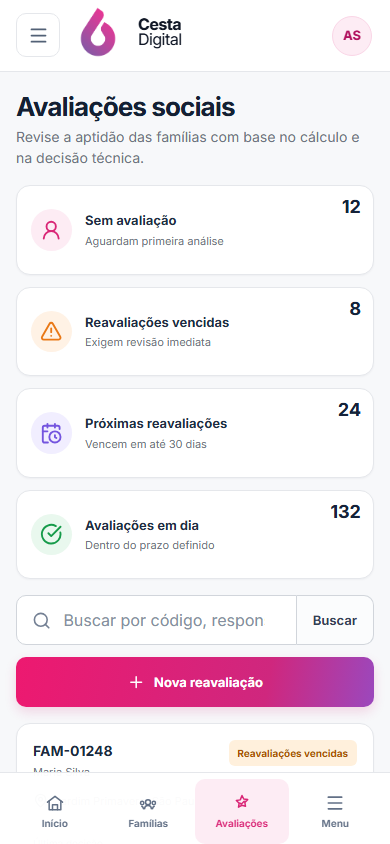
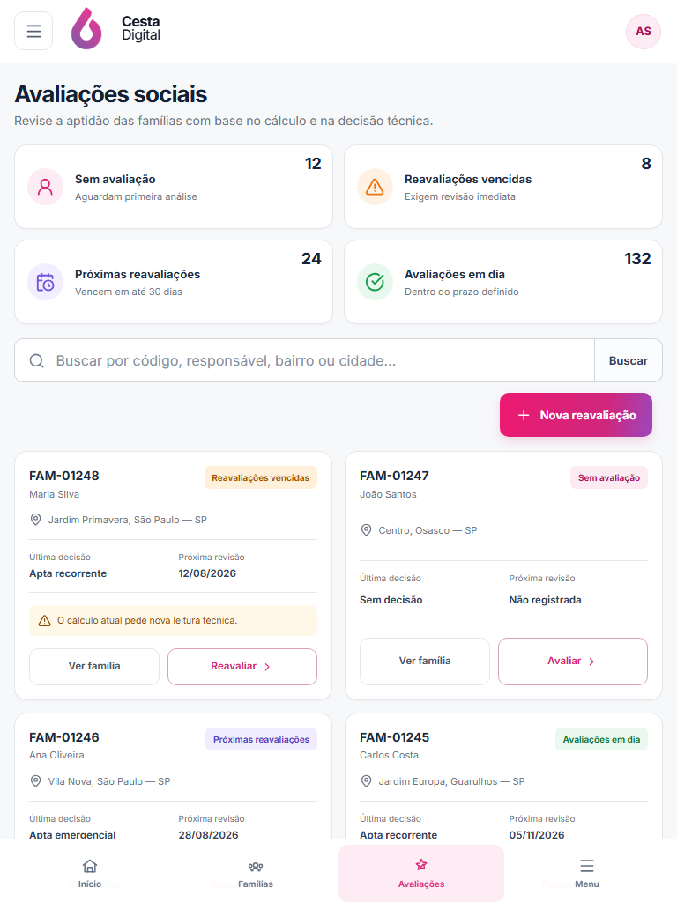
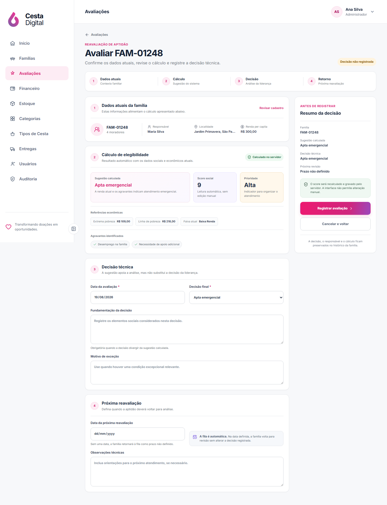
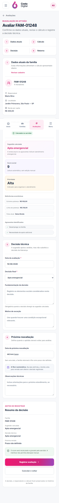

V2-07B · Avaliações
Comparação da direção aprovada com a fila real de aptidão e o formulário de decisão técnica.
Aprovado em 20/08/2026Referência × implementação
Clique em qualquer imagem para abrir a captura em tamanho original.


Fila responsiva
Desktop mantém tabela e painel contextual; tablet e mobile recebem cartões próprios sem rolagem horizontal.



Avaliação de aptidão
Dados atuais, cálculo do servidor, decisão humana e próxima reavaliação aparecem como conceitos distintos.


Diferenças funcionais deliberadas
Os quatro estados são sem avaliação, prazo vencido, revisão próxima e avaliação em dia. Filtros, busca, página e seleção permanecem na URL.
Triagem, documentos, visita e entrevista do mockup não existem no domínio e não foram simulados. O fluxo usa dados, cálculo, decisão e retorno reais.
O score é somente leitura e pertence ao servidor. Divergência entre sugestão e decisão exige fundamentação e fica registrada no histórico.